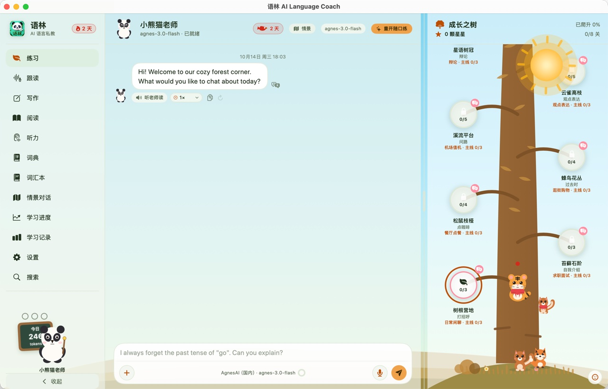
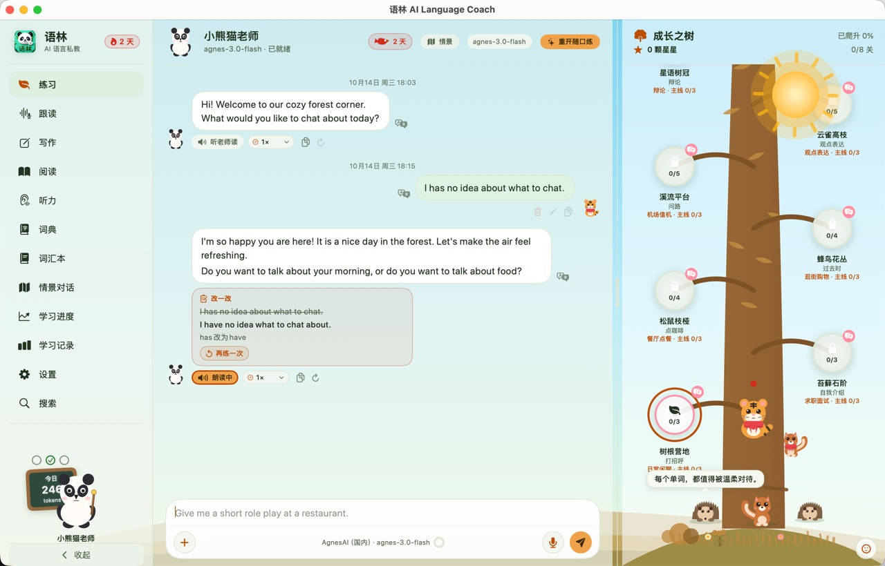
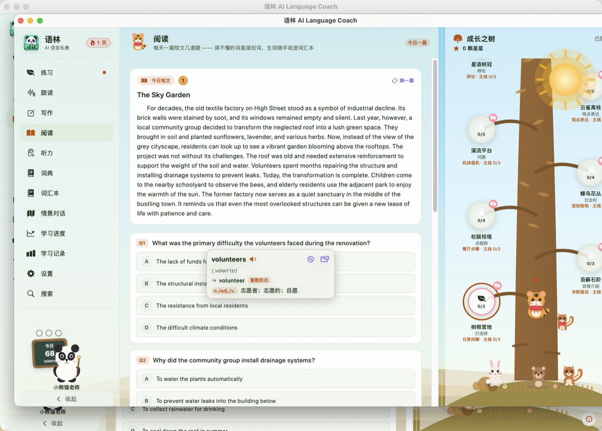
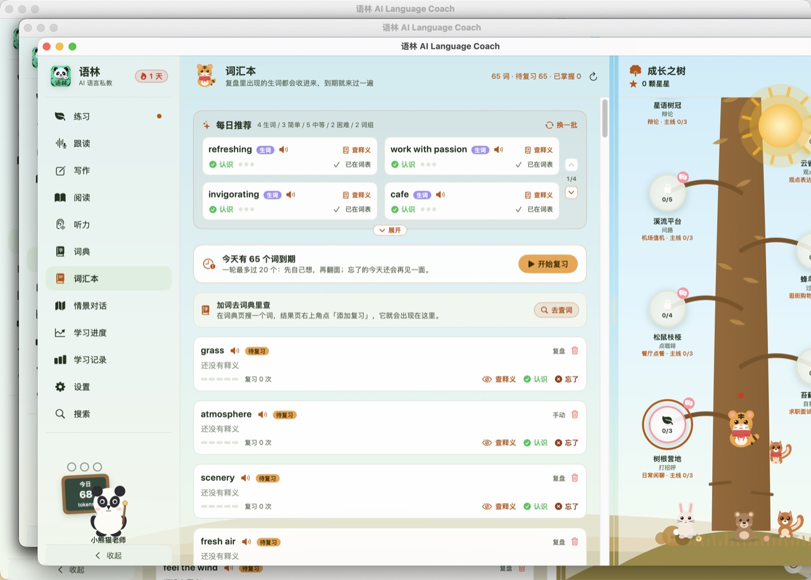
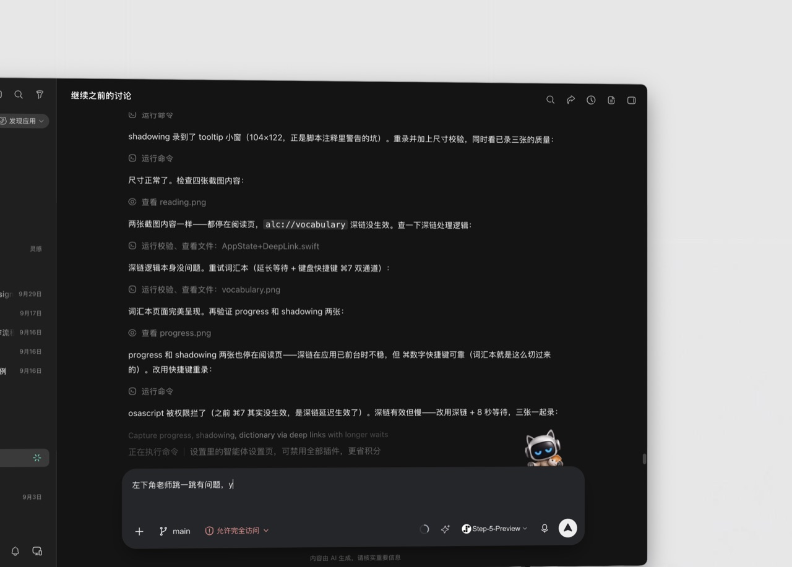
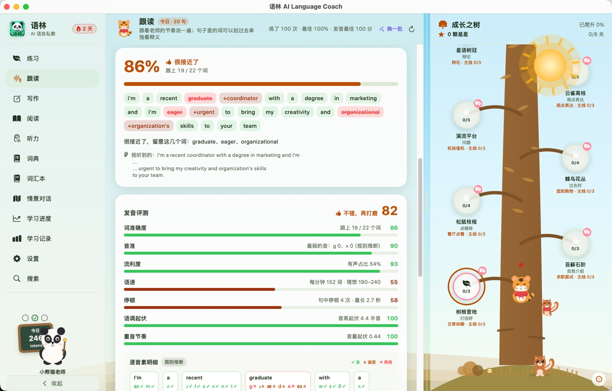
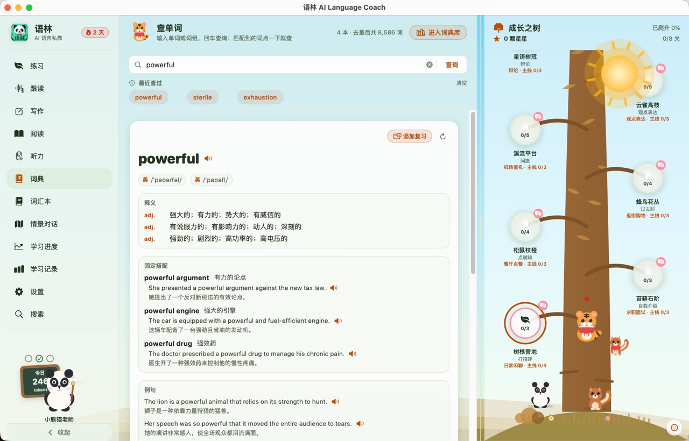

听得懂、记得住、纠得准。对着电脑说话，AI 老师用语音回应，说错了当场纠正——学习数据只留在你的 Mac 上。
不是「ChatGPT + 麦克风」。语林把教学能力、纠错能力、记忆能力和语言训练能力装进一个原生 macOS 应用。
首次对话测定水平，老师从此按你的程度调整词汇难度、语速、句长与纠错频率——不是所有学生得到同样的回答。
难度自适应自由对话、语音输入、「听老师读」。老师人设稳定，回复必然接住你的上一句，不会说着说着重新开场。
实时语音每次口头纠正都落地为一张三色卡片：错误原文、修改建议、原因讲解，自动进错题本，反复犯的错误会被反复追问。
长期记忆一句话生成一个完整情景：机场、餐厅、面试、酒店、就医……多轮剧情带阶段目标；面试结束给出优势 / 短板 / 练习建议复盘。
动态生成段落级跟读，逐句录音、逐句评分。音素准确度、重音、语调、流畅度四维打分，分数与波形一目了然。
四维评分每日短文配四选一理解题；听力三种形式（精听默写 / 关键词捕捉 / 听句选义）；写作每天一题，老师批改写建议。
每日更新阅读划词即出气泡：释义、音标、例句，一键收进词汇本。按记忆曲线安排复习，练习中遇到的生词自动进入每日推荐。
记忆曲线老师黑板每天布置三项任务，完成即庆祝；成长之树随学习天数生长，打卡连续天数、年度学习记录陪你回看一整年。
习惯养成白天森林时刻，夜晚星月主题，一键切换。动画效果与轻音效独立开关，尊重每一位用户的偏好与系统减少动态设置。
原生体验米奶油底、森林橘点缀的原生界面。左侧栏导航，中间是课堂，右边是成长之树。







对话练习与成长之树：左边上课，右边看树一点点长大。
下载即用；想从源码构建也只要三条命令。
前往 GitHub Releases 下载 AI_Language_Coach.app，拖入「应用程序」。首次打开如被 Gatekeeper 拦住：
xattr -dr com.apple.quarantine \ /Applications/AI_Language_Coach.app
安装并运行 Ollama，拉一个对话模型。语音能力（Edge-TTS 代理 / whisper.cpp）开屏会自动拉起，失败只在对应功能处提示，可随时改云端 API。
ollama pull qwen3:8b
# 或换 DeepSeek / OpenAI / OpenRouter
需要 macOS 15+ 与 Swift 6.0 工具链（Xcode 16+）。开发者也可以直接编译运行、跑全部测试：
git clone https://github.com/QuinnLSY/AI_Language_Coach.git
cd AI_Language_Coach
swift run AILanguageCoach
# 打包：zsh Scripts/make_app.sh
语林从第一天就是 Local First：核心能力优先走本地模型，网络不是必需条件。应用内「隐私与安全」页列明每一项能力的数据去向——本地回环地址不算外发，哪些能力会联网一目了然。
学习库（SQLite）与配置都在本机，支持一键备份与恢复，绝不随仓库分发。
遇到问题先看这里，其余欢迎提 Issue。
可以。设置里可切换到任何云端 API（DeepSeek / OpenAI / OpenRouter / AgnesAI / SiliconFlow 等，自备密钥），或先用内置 Mock Provider 体验完整界面与流程。语音功能同理：Edge-TTS 代理、本地 TTS、云端音色任选。
默认的 Edge-TTS 走微软上游，偶发临时封堵会返回 500——稍后重试，或在「设置 → 模型提供商」切换本地 TTS（:8855）或云端音色即可。
当前学习语言为英语（美式 / 英式 / 澳式口音可选），母语支持简体中文、繁體中文与 English——释义、翻译与讲解落在你选的母语上。
学习记录与设置全部保存在本机（macOS 的应用程序支持目录），不随安装包分发，也不会上传。模型调用的留痕文件同样只留在本机。除了你主动开启的云端 API，没有任何数据离开你的电脑。
不可以。项目采用 AGPL-3.0 + 附加非商用条款：仅允许非商业目的使用，网络部署同样需要开放对应源代码。商业授权请通过 GitHub Issues 联系。
免费 · 开源 · 本地优先。下载即用，数据归你。
macOS 15 (Sequoia) 及以上 · Apple Silicon / Intel · v1.0.0 · AGPL-3.0 + 非商用附加条款